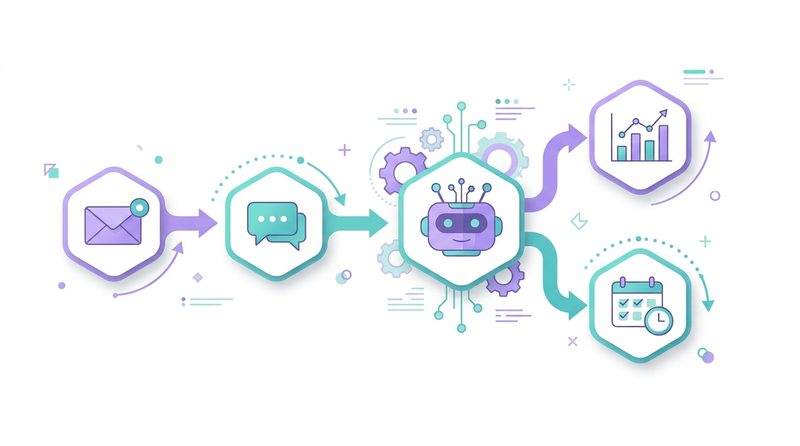
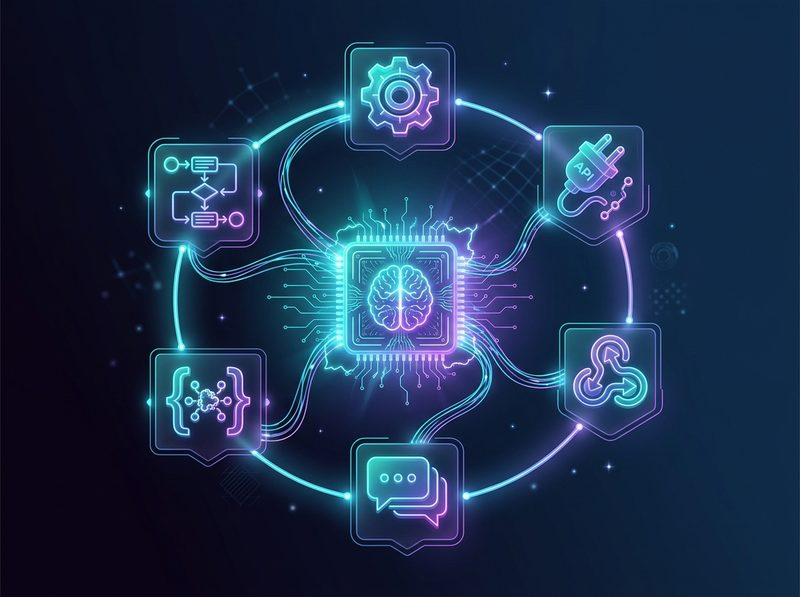
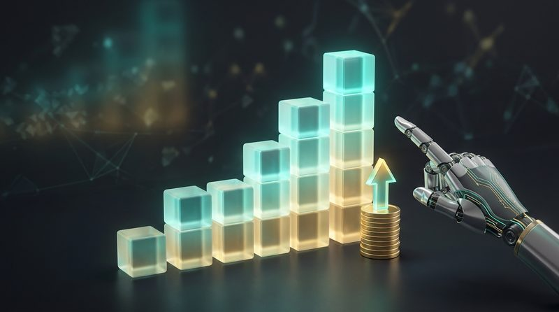
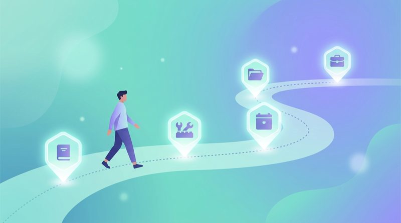
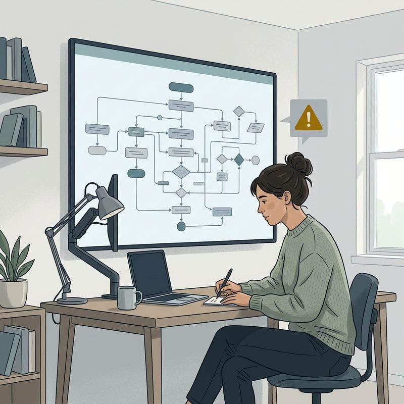
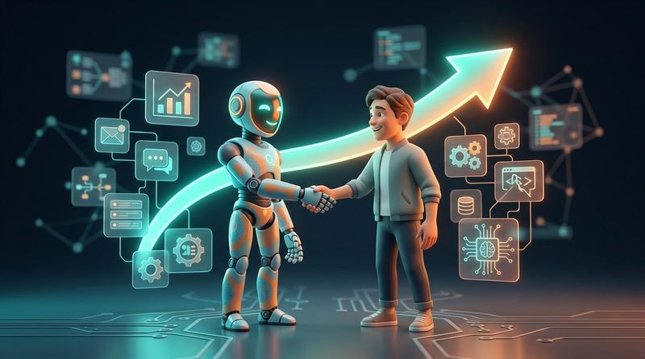

متخصص اتوماسیون با هوش مصنوعی:
مهارتها، درآمد و مسیر تبدیل شدن (۱۴۰۵)
این نقش دقیقاً چیست، چه مهارتی میخواهد، چقدر درآمد دارد، و چطور میتوانید وارد آن شوید.
پاسخ کوتاه: کسی که کارهای «فکری تکراری» را خودکار میکند
اگر فقط یک جمله میخواهید: متخصص اتوماسیون با هوش مصنوعی کسی است که فرآیندهای تکراری کسبوکار را با ابزارهایی مثل n8n، Make و AI Agents خودکار میکند. در ایران، آگهیهای استخدام این نقش از ۳۰ تا ۷۰ میلیون تومان حقوق پیشنهاد میدهند.
در این راهنما، اول مشخصات این نقش را میبینید، بعد مهارتهای لازم، سپس درآمد واقعی در ایران، و در پایان مسیر یادگیری گامبهگام.
آخرین بهروزرسانی: ۱۲ آبان ۱۴۰۵ — حقوقها بر اساس آگهیهای واقعی ۱۴۰۵ است و ممکن است تغییر کند.
مدیر محصول و مشاور اتوماسیون با بیش از ۵ سال تجربه. این راهنما بر اساس تجربه واقعی در پروژههای اتوماسیون نوشته شده است. درباره من
متخصص اتوماسیون با هوش مصنوعی دقیقاً چه کار میکند؟

🔧 کارهای روزمره
- طراحی Workflow با n8n یا Make
- اتصال APIها و Webhookها به هم
- ساخت AI Agent برای پاسخگویی یا تحلیل
- شناسایی فرآیندهای قابل اتوماسیون
- تست و بهینهسازی اتوماسیونها
🎯 خروجی نهایی
سیستمی که بدون دخالت انسان کار میکند: ایمیلها را خلاصه میکند، به مشتری پاسخ میدهد، گزارش میسازد، محتوا تولید میکند، یا دادهها را بین ابزارها جابهجا میکند.
به عبارت دیگر: زمان و انرژی تیم را آزاد میکند تا روی کارهای مهمتر تمرکز کنند.
مهارتهای لازم (و چه چیزهایی لازم نیست)

| مهارت | سطح لازم | چرا مهم است |
|---|---|---|
| n8n یا Make | حرفهای | ابزار اصلی ساخت Workflow. در آگهیهای استخدام ایران صریحاً ذکر شده |
| API و Webhook | متوسط | برای اتصال ابزارها به هم. بدون این، اتوماسیون محدود میشود. |
| AI Agent و LLM | متوسط | افزودن هوش به Workflow (پاسخگویی، تحلیل، تولید محتوا). |
| تفکر فرآیندی | حرفهای | مهمتر از ابزار. باید بفهمید کدام فرآیند قابل اتوماسیون است و چطور. |
| برنامهنویسی عمیق | لازم نیست | ابزارهای No-Code کافی هستند. آشنایی پایه با JSON کمککننده است. |
درآمد واقعی در ایران (۱۴۰۵)
بر اساس آگهیهای واقعی استخدام.

| شرکت / موقعیت | حقوق پیشنهادی | منبع |
|---|---|---|
| لرن فایلز (متخصص AI Automation) | از ۳۰,۰۰۰,۰۰۰ تومان | جابینجا |
| گروه نُد (AI Automation Engineer) | از ۴۰,۰۰۰,۰۰۰ تومان | جابینجا |
| توسعه تجارت سردارجنگل (کارشناس AI و اتوماسیون) | ۳۰ تا ۴۰,۰۰۰,۰۰۰ تومان | جاب ویژن |
| سامان جهان پردازش (کارشناس ارشد، دورکار برای کانادا) | ۶۰ تا ۷۰,۰۰۰,۰۰۰ تومان | کاردیکس |
بازه معمول برای نقش مبتدی/میانرده: ۳۰ تا ۴۰ میلیون. برای نقش ارشد: ۶۰ تا ۷۰ میلیون. امکان فریلنسری و درآمد دلاری هم وجود دارد.
مسیر تبدیل شدن (۴ گام)

- گام ۱: یک ابزار No-Code را یاد بگیرید: n8n (رایگان) یا Make. دوره Quickstart رایگان کافی است. راهنمای آموزش اتوماسیون را ببینید.
- گام ۲: ۳ پروژه واقعی بسازید: خلاصهساز ایمیل با AI، پاسخگوی هوشمند مشتری، گزارشگیر خودکار فروش. اینها نمونهکار شما میشوند.
- گام ۳: نمونهکارها را نمایش دهید: در پروفایل لینکدین، گیتهاب یا حتی یک صفحه ساده. کارفرما به «چه ساختهاید» نگاه میکند، نه «چه خواندهاید».
- گام ۴: درخواست استخدام یا پروژه بدهید: در جابینجا، کاردیکس، یا پلتفرمهای فریلنسری. با ۳ نمونهکار، شانس شما بسیار بالاتر از کسی است که فقط دوره دیده.
⚠️ یک هشدار صادقانه

این نقش «درآمد سریع بدون مهارت» نیست. کسانی که فقط چند دوره دیدهاند اما نمونهکار واقعی ندارند، در بازار رقابتی شانس کمی دارند.
- نمونهکار مهمتر از مدرک است: کارفرما به نتیجه نگاه میکند، نه به گواهی پایان دوره.
- تفکر فرآیندی را تمرین کنید: ابزار عوض میشود (n8n، Make، Zapier)، اما توانایی «شناسایی فرآیند قابل اتوماسیون» همیشه ارزشمند است.
- با پروژههای کوچک شروع کنید: اولین پروژه فریلنسری را با قیمت رقابتی بگیرید تا نمونهکار و اعتبار بسازید. راهنمای فریلنسری
اتوماسیون کسبوکار با هوش مصنوعی و اتوماسیون تولید محتوا را ببینید — زمینههای تخصصی این نقش.
سؤالات متداول درباره متخصص اتوماسیون با هوش مصنوعی
متخصص اتوماسیون با هوش مصنوعی کیست؟
متخصص اتوماسیون با هوش مصنوعی کسی است که فرآیندهای تکراری کسبوکار را با ابزارهایی مثل n8n، Make و AI Agents خودکار میکند. او کارهایی که قبلاً نیاز به تصمیم انسان داشت (پاسخ به مشتری، دستهبندی داده، تولید محتوا) را به سیستم میسپارد. در ایران، آگهیهای استخدام این نقش از ۳۰ تا ۷۰ میلیون تومان حقوق پیشنهاد میدهند.
مهارتهای لازم برای متخصص اتوماسیون چیست؟
مهارتهای اصلی: ۱) ابزارهای No-Code مثل n8n و Make ۲) اتصال API و Webhook ۳) طراحی AI Agent و Workflow ۴) آشنایی با مدلهای زبانی (GPT، Claude) ۵) تفکر فرآیندی برای شناسایی کارهای قابل اتوماسیون. برنامهنویسی عمیق لازم نیست، اما آشنایی پایه با JSON و API کمککننده است.
درآمد متخصص اتوماسیون با هوش مصنوعی در ایران چقدر است؟
بر اساس آگهیهای واقعی ۱۴۰۵: لرن فایلز از ۳۰ میلیون تومان، گروه نُد از ۴۰ میلیون تومان، سردارجنگل ۳۰-۴۰ میلیون تومان و سامان جهان پردازش ۶۰-۷۰ میلیون تومان برای نقش ارشد. بازه معمول: ۳۰ تا ۷۰ میلیون تومان.
آیا برای متخصص اتوماسیون باید برنامهنویسی بلد باشم؟
خیر. ابزارهای No-Code مثل n8n و Make با Drag & Drop کار میکنند. اما آشنایی با API، Webhook و JSON به شما امکان میدهد Workflowهای پیچیدهتر بسازید. برای نقشهای ارشد، آشنایی با پایتون یا جاوااسکریپت مزیت است.
چطور متخصص اتوماسیون با هوش مصنوعی شوم؟
مسیر پیشنهادی: ۱) یک ابزار No-Code (n8n یا Make) را یاد بگیرید ۲) ۳ پروژه واقعی بسازید (خلاصهساز ایمیل، پاسخگوی مشتری، گزارشگیر خودکار) ۳) نمونهکارها را در پروفایل خود نمایش دهید ۴) در آگهیهای استخدام یا پروژههای فریلنسری شرکت کنید. صفحه «آموزش اتوماسیون با هوش مصنوعی» را ببینید.
آیا متخصص اتوماسیون با هوش مصنوعی آینده شغلی دارد؟
بله. تقاضا برای این نقش در حال رشد است. ۳۳٪ افزایش آگهیهای شغلی AI در پاییز ۱۴۰۴ و آگهیهای متعدد در جابینجا و کاردیکس نشاندهنده بازار فعال است. همچنین امکان فریلنسری و کار دورکار وجود دارد.
میخواهید وارد این حوزه شوید؟
در جلسه ۳۰ دقیقهای رایگان، مسیر یادگیری و نمونهکار مناسب سطح شما را مشخص میکنیم. خدمات خودکار را هم ببینید.
